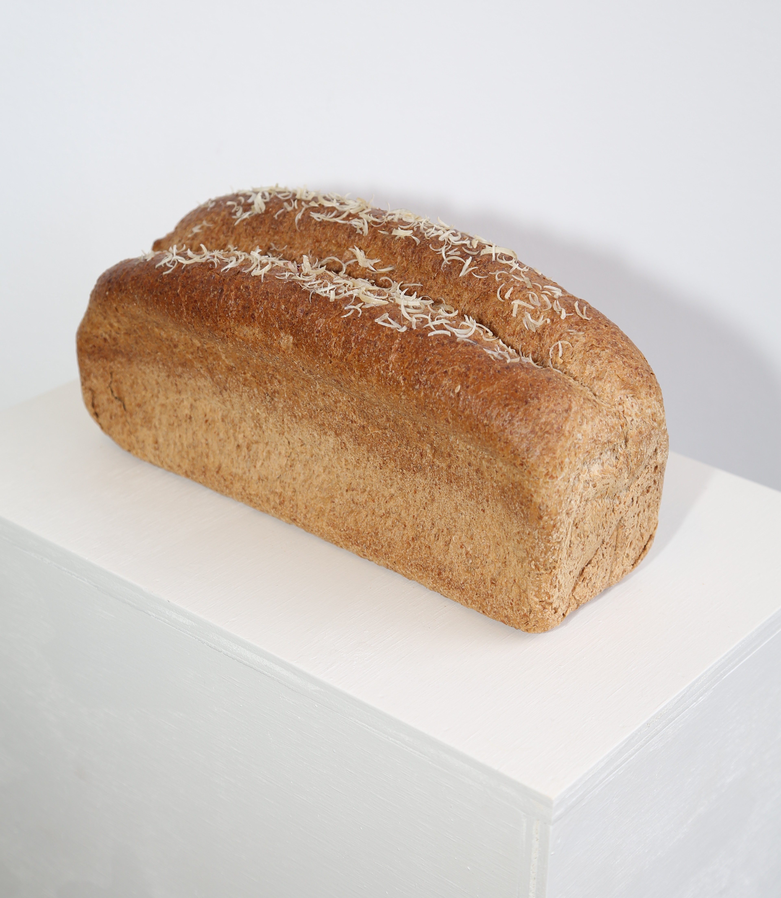

Loaf, 2024
A bread loaf topped with finger-and-toe-nails instead of with seeds. This piece is relating to our own discarded body parts as parts that can nurture us. Using the parts that fall off to become closer to ourselves and others.
